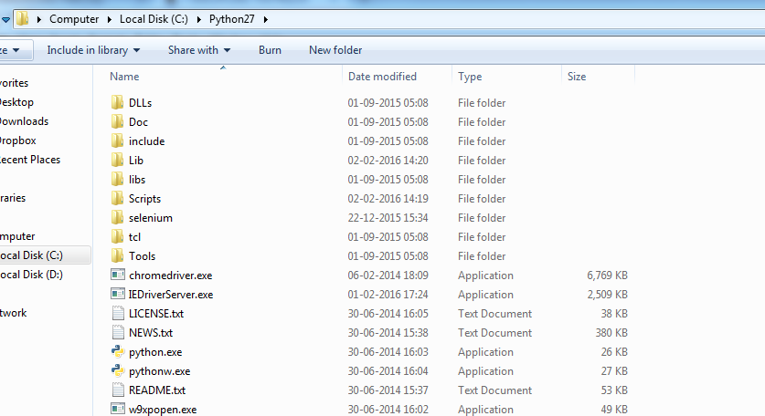
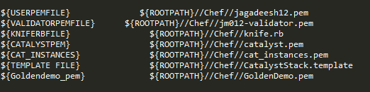
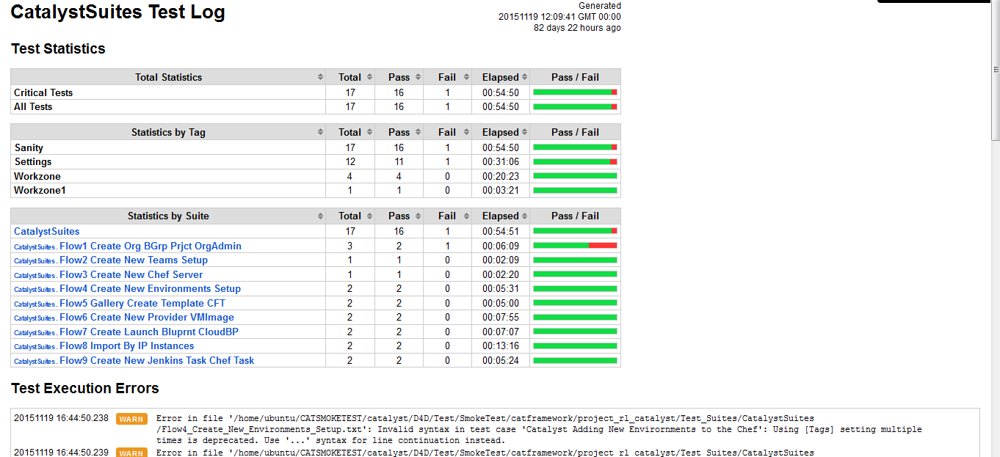
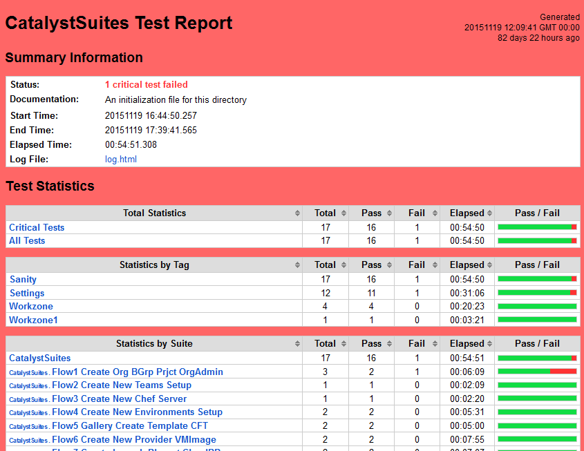

Automation Framework¶
Robot Framework which is a generic test automation framework and when combined with Selenium 2 it makes both writing your tests and running them quite intuitive.
Introduction
Robot Framework which is a generic test automation framework for acceptance testing and its tabular test data syntax is almost plain English and easy to understand. Its testing capabilities can be extended by test libraries implemented either with Python or Java, and users can create new higher-level keywords from existing ones using the same syntax that is used for creating test cases. Robot Framework itself is open source and released under Apache License 2.0, and most of the libraries and tools in the ecosystem are also open source. The development of the core framework is supported by Nokia Siemens Networks.
Installing test tools
- PYTHON INSTALLATION:
Robot Framework is currently not compatible with Python 3.x. From the python download page. https://www.python.org/ftp/python/2.7.9/python-2.7.9.msi
Next we need to set up the PATH environment variable in Windows when you install Python.
Open Start > Settings > Control Panel > System > Advanced > Environment Variables Select System variables > PATH > Edit and add e.g. ;C:Python27;C:Python27Scripts at the end of the value. Exit the dialog with OK to save the changes.
Ensure pip is available in C:Python27Scripts folder.
- ROBOT FRAMEWORK AND SELENIUM2LIBRARY INSTALLATION:
It is easiest to install Robot Framework and Selenium2Library along with its dependencies using pip packagemanager. Once you have pip installed, all you need to do is running these commands in your Command Prompt:
pip install robotframework
pip install robotframework-selenium2library
Now Ensure pybot.bat is available in C:Python27Scripts folder.
- BROWSER:
Install Firefox , Chrome
NOTE: For Chrome Browser you need to download the Chrome driver .exe and place it C:Python27 folder.

- Download the code from Git:
https://github.com/RLOpenCatalyst/tests.git The Test Folder contains set of Smoke Test , Functional Test.
To Run TEST CASES
- The smoke test folder contains

- Create a Chef folder and place the pem and other files as specified in the Chef folder. As in my case my Chef folder contains these files. Pem file, Knife.rb file,cat_instances.pem files are required for testcases execution.
- Go to SmokeTestcatframeworkproject_rl_catalystTest_ResourcesTest_Data folder and Edit the QA.txt file.
Give the proper pemfile names to proper variables & make sure you have the pem files.
Example as in my case looks like this -

NOTE - // [Forward Slash] in Ubuntu
\\ [Backward Slash] in Windows
NOTE - ${ROOTPATH} is the absolute path from the place where the code exists till project_rl_catalyst folder.
As in my case - ${ROOTPATH}variable contains D:CodeTestSmokeTestcatframeworkproject_rl_catalyst which I am passing at time of execution.
- Select System variables > PATH > Edit and add your ${ROOTPATH} variable value i.e D:CodeTestSmokeTestcatframeworkproject_rl_catalyst and save it .
As in my case it looks like this -

- To Run the Smoke Test Cases using the Command -
NOTE – Edit the ROOTPATH variable as in your case and give the path till where the Test Suites exist & run the below command - You can pass the Arguments i.e Overrriding for BROWSERTYPE and ENVIRONMENTSERVER from command line by looking at QA.txt file for the particular vairable. pybot –include Sanity –variable ENV:QA –variable BROWSERTYPE:firefox –variable ENVIRONMENTSERVER:http://d4d.rlcatalyst.com/public/login.html –variable ROOTPATH:D:CodeTestSmokeTestcatframeworkproject_rl_catalyst D:CodeTestSmokeTestcatframeworkproject_rl_catalystTest_SuitesCatalystSuites
NOTE – The path where my TestSuites Exists. D:CodeTestSmokeTestcatframeworkproject_rl_catalystTest_SuitesCatalystSuites described in the above step.
NOTE - To Run the Functional Test follow the same steps from starting as mentioned above ie Create a chef folder under Functional Test...project_rl_catalyst. Edit the QA.txt file and give the proper paths to pemfiles with ROOTPATH variable.
Reading the results
- Log.html report

- Report.html report
After the tests have run there are couple of result files to read: report.html and log.html and output.xml.
The report.html shows the results of your tests and its background is green when all tests have passed and red if any have failed. It also shows “Test Statistics” for how many tests have passed and failed. “Test Details” shows how long the test took to run and, if it failed, what the fail message was.
The log.html gives you more detailed information about why some test fails if the fail message doesn’t make it obvious. It also gives a detailed view of the execution of each of the tests.